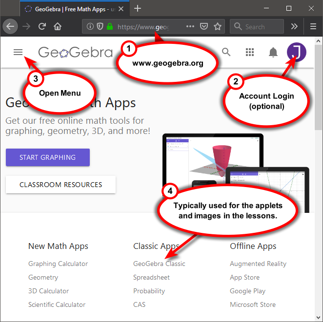

On this Page
GeoGebra
You have already used GeoGebra at this point if you interacted with the applet on the 3D Space page. But you should probably learn how to use the graphing software for your own needs. GeoGebra is a free web-based graphing and calculator technology, and there are probably free apps available on iTunes or the Google Play Store. It is not required for this course, but it can be a very helpful resource. You are welcome to use other graphing software if you want, however GeoGebra will be used within the lessons throughout the semester. You will not be allowed to use GeoGebra or any apps on tests.
Open a browser and nagivate to GeoGebra (new window) [https://www.geogebra.org/]. If you want to create a user account, it is free and will allow you to save any graphs or work you do, but this is not required. On the GeoGebra home page, you will find a list of various apps organized by whether they are part of the New Math Apps or the Classic Apps. For the most part, both versions offer very similar features and only differ by layout. The applets and images contained within the lessons are usually created using the GeoGebra Classic.
For now, let's explore the GeoGebra Classic app, which is illustrated below. On the left side of screen is the Input space. Here you can type any commands or functions to be added to the graph, or to be used as a simple calculator. On the right side of the screen is the Graph view. You can edit the settings for the graph to change its appearance. There is also a GeoGebra menu where you will find options to save your current work (if you created an optional account or download to your computer), add another view such as the 3D graph, or remove a view. At the top of the screen is a toolbar that contains various elements such as points, lines, geometric shapes, and interactive tools such as sliders and checkboxes. These can be easily added to the graph view.
There are many commands and functions that you can enter in GeoGebra, as illustrated below. You can graph algebraic functions in the \(xy\)-plane such as y = x^2 + 1 or even implicit equations like x^2 + y^2 = 1. You can plot points by simply typing in the coordinates, such as (1, 2, 3). There is a vector command with two variations, vector(point1, point2) draws a vector from point1 to point2 while vector(point) draws a vector from the origin to the specified point. Notice that each command has been given an identifying name. The parabola is names f, the point is A, and the vectors are u and v. You can specify these names or let GeoGebra given them automatically. You can also change them later. Also, notice that the colors can be changed from the settings menu. There is also a settings menu for the graph. In this case, a grid was added to the xy-plane and the axes were given their appropriate label.
Be aware that while GeoGebra is a wonderful graphing and computational tool, it has a steep learning curve. It may look very similar to other resoures such as Desmos (new window) [https://www.desmos.com/], but it can do so much more. If you want to use GeoGebra (and I suggest you do), then you will want to invest plenty of time to explore what it can do. Play around with it - try to graph different functions, change settings to see what happens, try doing things with the different views, explore the various commands and tools. It is not perfect, but hey, its free!